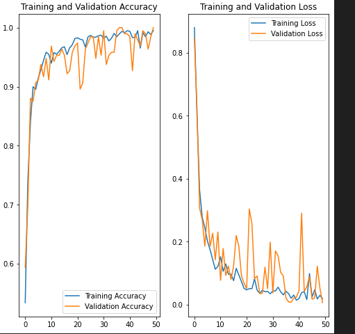

Potato Disease Classification · Computer Vision & Deployment
Inspired by PlantVillage and industry tutorials, I implemented a full ML workflow for potato disease detection: from preprocessing and CNN model training to FastAPI serving, React/React Native interfaces, and deployment on GCP with TensorFlow Serving & TF Lite.
Highlights
- Data preprocessing and training pipelines in Jupyter Notebooks.
- Custom CNN model achieving robust leaf disease classification.
- FastAPI backend for inference with Dockerized deployment.
- Frontend in React (web) and React Native (mobile).
- TF Lite model deployed on GCP Functions for mobile efficiency.
- Explored scalable hosting using TensorFlow Serving + Docker.
Stack
Python
TensorFlow
FastAPI
React
React Native
Docker
GCP
Jupyter